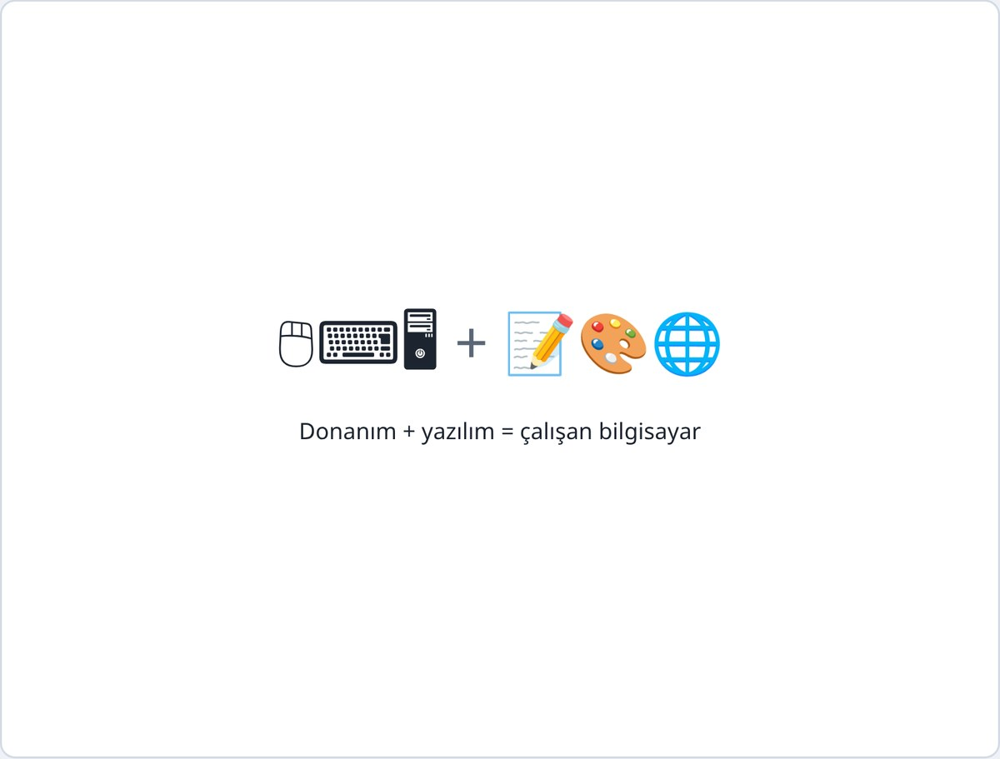
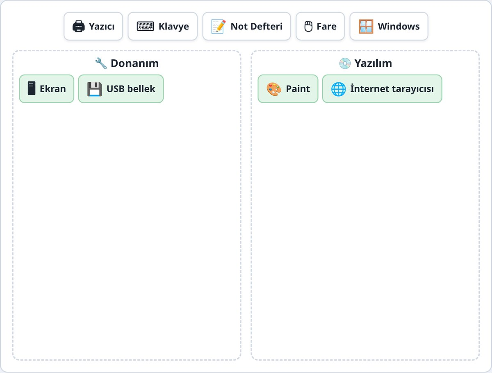
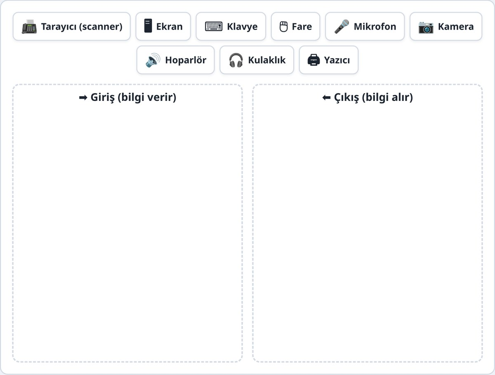
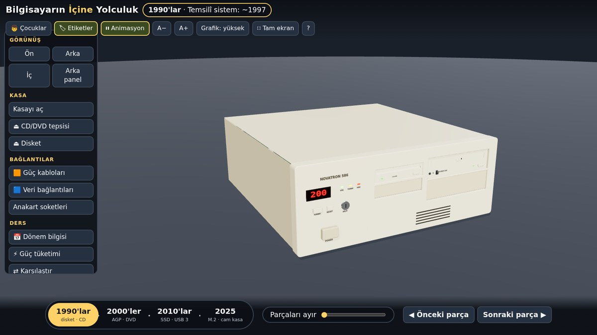
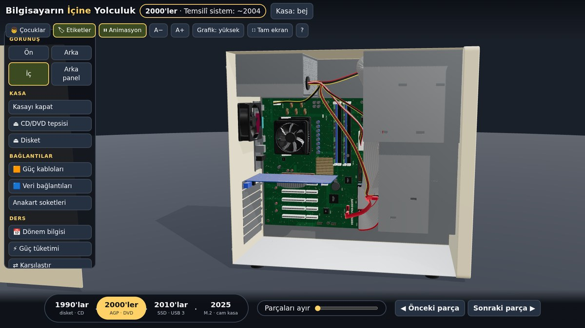
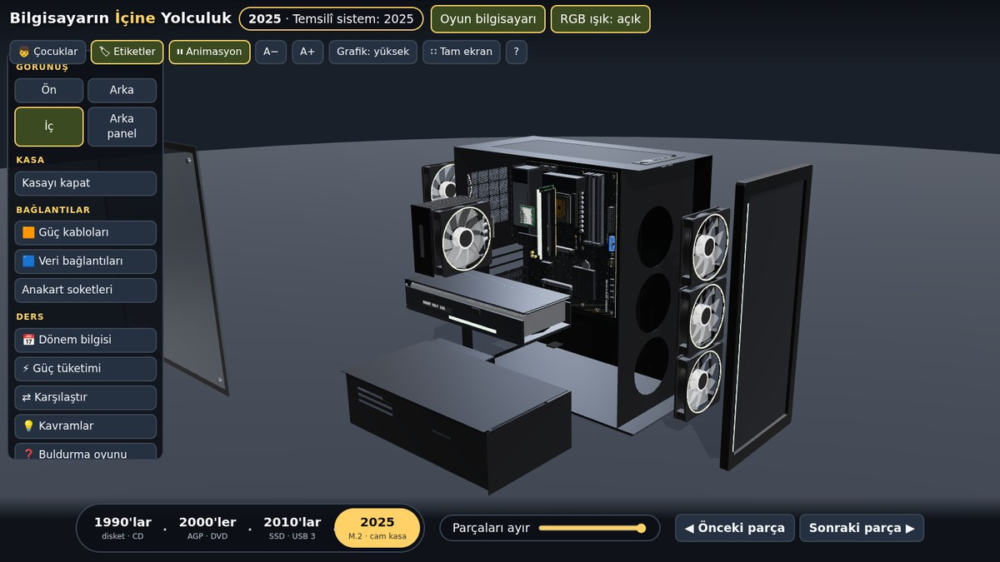

4. Hafta: Donanım ve yazılım
Alıştırmalar ve oyunlar
Bu hafta
| 1 Bilgisayarın İçine Yolculuk | 3B |
|---|---|
| 2 Donanım dersi: kasanın içi | 3B |
| 3 Donanım mı, yazılım mı? | 15 dk |
| 4 Kasanın içi: parçalar | 25 dk |
| 5 Portlar ve kablolar | 20 dk |
|---|---|
| 6 Bilgisayar ilanını okuyalım | 20 dk |
| 7 Bakım, sağlıklı ve güvenli kullanım | 25 dk |
| 8 Bir şey çalışmıyor! İlk kontroller | 20 dk |
Hafta sonunda: ödev (gerçek bilgisayarda altı küçük görev) ve 10 soruluk test ile 15 soruluk donanım testi.
Ders 3 · Donanım ve yazılım

Ders 3 · Oyun 1
Dikkat: USB bellek donanımdır; içindeki dosyalar ise yazılım/veridir.

Ders 3 · Oyun 2
| Giriş | Bilgisayara bilgi verir: klavye, fare, mikrofon, kamera, tarayıcı (scanner) |
|---|---|
| Çıkış | Bilgisayardan bilgi alır: ekran, hoparlör, yazıcı, kulaklık |
Dokunmatik ekran hem giriştir hem çıkış!

Ders 3 · Konu
| Disk (HDD / SSD) | Kasanın içinde. Fotoğraf, belge, program kalıcı durur. Dolap gibi. |
|---|---|
| RAM (bellek) | O an açık işler için. Çalışma masası gibi; bilgisayar kapanınca boşalır. Kaydetmediğiniz yazı bu yüzden kaybolur. |
| USB bellek | Cebe sığan, takılıp çıkarılan küçük disk. Cep gibi; dosyaları başka bilgisayara götürür. |
Ders 1 · Bilgisayarın İçine Yolculuk



Kasayı açın, parçaları ayırın, bir parçaya tıklayıp “Ne işe yarar? Nereye takılır?” sekmelerini okuyun. Üstten Çocuklar / Gençler (teknik) düzeyi seçilir.
Ders 1 · Bilgisayarın İçine Yolculuk
| 1990'lar | 2000'ler | 2010'lar | 2025 | |
|---|---|---|---|---|
| İşlemci | Pentium sınıfı, Socket 7 | Pentium 4 sınıfı, Socket 478 | 4 çekirdek, LGA 1150 | 8 çekirdek, AM5 |
| RAM | 72-pin EDO SIMM | DDR-400 | DDR3-1600 | DDR5-6000 |
| Depolama | IDE HDD, disket, CD-ROM | SATA HDD, disket, DVD | SATA SSD, HDD, DVD | M.2 NVMe |
| Güç kaynağı | 200 W | 350 W | 500 W | 850 W |
Temsilî sistemlerdir; kesin geçiş tarihlerini göstermez. Marka ve model adları uydurmadır.
Ders 1 · Bilgisayarın İçine Yolculuk
| Kasayı aç · Parçaları ayır | Kasanın içini ve parçaların katmanlarını gösterir |
|---|---|
| Parçaya tıkla | Ne işe yarar · Nereye takılır · Bu dönemde nasıldı |
| İçini göster | HDD’de plakalar döner, CD/DVD’de lazer kızağı hareket eder |
| Karşılaştır | Eski ve yeni parça cetvel üzerinde gerçek ölçekte yan yana |
| Güç tüketimi | PSU kapasitesi ile anlık tüketim: boşta, ofis, oyun |
| Buldurma oyunu | Etiketler gizlenir, soru sorulur, puan tutulur |
Ders 2 ve 4 · Kasanın içi
| Anakart | Bütün parçaların takıldığı büyük kart: şehrin yolları |
|---|---|
| İşlemci (CPU) | Hesapları yapan beyin |
| RAM | Çalışma masası: o an açık işler |
| Disk (SSD / HDD) | Dolap: dosyalar kalıcı durur |
| Ekran kartı | Görüntüyü hazırlayıp ekrana gönderir |
| Güç kaynağı | Prizdeki elektriği parçalara uygun hâle getirir |
| Fan | Isınan parçaları soğutur; vınlama sesi buradan |
Parça parça anlatım: Donanım dersi (3B, 22 adım) ve ayrı Donanım sunusu.
Ders 5 · Portlar ve kablolar
| USB-A | Dikdörtgen: fare, klavye, USB bellek, yazıcı |
|---|---|
| USB-C | Küçük ve oval; iki yönlü takılır: telefonlar, yeni dizüstüler |
| HDMI | Görüntü ve ses: monitör, televizyon |
| Yeşil ses girişi | Kulaklık, hoparlör |
| Pembe ses girişi | Mikrofon |
| Ethernet | İnternet kablosu (modemden) |
3B uygulamada Arka panel görünüşüne geçip portlara tıklayın.
Ders 6 · İlan okuma
| KB | Kısa bir yazı |
|---|---|
| MB | Bir fotoğraf ≈ 3–5 MB, bir şarkı ≈ 4 MB |
| GB | Bir film ≈ 2–4 GB |
| TB | 1 TB ≈ 1000 GB ≈ 250.000 fotoğraf |
Her biri bir öncekinin yaklaşık 1000 katı. Sıra: 64 GB < 500 GB < 1 TB.
| Bellek (RAM) | 16 GB: masa, kapanınca boşalır |
|---|---|
| Depolama | 512 GB SSD: fotoğraflar burada durur |
| Ekran | 15,6 inç: köşeden köşeye (1 inç ≈ 2,5 cm) |
| İşletim sistemi | Windows 11 Home: tek yazılım satırı |
| Bağlantılar | HDMI ile televizyona bağlanır |
Ders 6 · İlan okuma
| 1 | ⊞ tuşuna basın, hakkında yazın, Bilgisayarınız hakkında’yı açın: Yüklü RAM satırına bakın. |
|---|---|
| 2 | Dosya Gezgini’nde soldan Bu bilgisayar’a tıklayın: diskin ne kadarının dolu olduğunu çubuk gösterir. |
| 3 | İki ilanı karşılaştırırken: fotoğraf ve video saklayacaksanız depolamaya (GB, TB), aynı anda çok iş yapacaksanız RAM’e bakın. |
SSD, eski tip diskten (HDD) çok daha hızlı ve sessizdir.
Ders 7 · Bakım
| Ekran temizliği | Kapalıyken, kuru ya da hafif nemli yumuşak bezle. Cam sil püskürtmeyin. |
|---|---|
| Havalandırma | Deliklerin önü açık; dizüstü yorganda değil, masa gibi sert yüzeyde |
| Güncellemeler | Ertelemeyin: güvenlik açıklarını kapatır |
| Elektrik | Akım korumalı priz; şimşekli fırtınada kapatıp fişi çekin |
| Sıvı döküldüyse | Hemen kapatıp fişi çekin, ters çevirip en az bir gün kurutun |
Kapatırken fişi çekmeyin: Başlat’tan kapatın. Önemli dosyaları yedekleyin.
Ders 7 · Sağlıklı ve güvenli çalışma
| Ekran | Bir kol boyu (50–70 cm) uzakta; üst kenarı göz hizasında ya da biraz altında |
|---|---|
| Oturuş | Sırt dik ve desteklenmiş, ayaklar yerde, dirsekler 90 derece, bilekler düz |
| Mola | Her saat 5–10 dakika kalkın. 20-20-20: 20 dakikada bir, 20 saniye uzağa bakın |
| Kablolar | Yürüme yolunda olmasın; prizi aşırı yüklemeyin |
| Kasa | Kendiniz açmayın; parça takılacaksa servise götürün |
| Elektrik yangını | Su dökülmez! Fişi çekin; karbondioksitli ya da kuru kimyevi tozlu söndürücü. Büyürse 112 |
Yangın alarmında eşyalarla uğraşmadan en yakın acil çıkıştan çıkın; asansör kullanmayın.
Ders 8 · Sorun giderme
| 1 | Kablo ve düğme: takılı mı, açık mı? |
|---|---|
| 2 | Ses: sessizde mi, kulaklık takılı mı? |
| 3 | Pil: kablosuz fare ve klavyede |
| 4 | Modem: kapatıp 10 saniye sonra açın |
| 5 | Yeniden başlat: çoğu sorunu çözer |
| 6 | Danışın: ekranın resmini çekip (Ekran Alıntısı) güvendiğiniz birine gösterin |
| Kapkara ekran, kasa ışığı yanıyor | Ekranın kendi düğmesi ve kablosu |
|---|---|
| Türkçe harfler yok | Sağ altta ENG yerine TUR |
| Program dondu | Bekleyin; olmazsa kapatın, yeniden başlatın |
Asla: ekranda çıkan “destek hattı” numarasını aramayın.
Özet
| Donanım | Elle tutulan parçalar: klavye, fare, ekran, kasa, yazıcı |
|---|---|
| Yazılım | Programlar: Windows, Not Defteri, Paint, tarayıcı |
| Giriş / Çıkış | Bilgisayara bilgi verir / bilgisayardan bilgi alır |
| Depolama | Dosyaların kalıcı durduğu yer: disk, USB bellek |
| RAM | Çalışma masası: bilgisayar kapanınca boşalır |
| İşlemci · anakart | Beyin · şehrin yolları |
|---|---|
| USB · HDMI · Ethernet | Fare, bellek · ekran, TV · internet kablosu |
| KB → MB → GB → TB | Her biri yaklaşık 1000 katı |
| 20-20-20 | 20 dakikada bir, 20 saniye uzağa bakın |
| Sorun olunca | Kablo, ses, pil, modem, yeniden başlat, danış |
Ödev: kendi bilgisayarınızda altı küçük görev; ödev kâğıdı yazdırılabilir. Test: 10 soru ve 15 soruluk donanım testi, tekrar içindir.